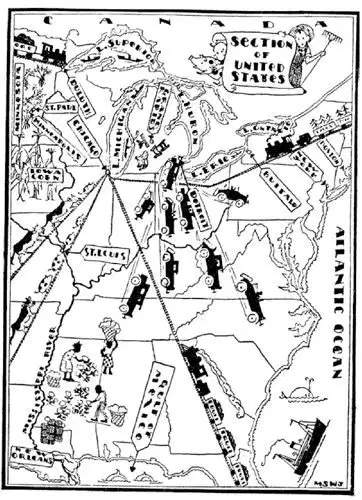

10
Five Big Puddles
五个大水坑

DID you ever wonder what an ant must think of us giants who tread on his ant-hills, or what he must think of a puddle of water?
There are five big puddles of water along the northern edge of the United States—at least they look like puddles on the map—as if a gigantic giant had left his wet umbrella standing and the water had trickled out over the land. We call these puddles “The Great Lakes,” for they are the biggest lakes on this side of the World, though a giant with legs a mile long would think them only puddles to wade across. Two of the lakes—the smallest two—I have already told you about. They are Lake Erie and Lake Ontario. Two of the others also have Indian names, Lake Michigan, which means “Great Lake,” and Lake Huron. The Greatest Lake of all the Great Lakes is called Superior, which means simply Greater Lake, as we say a boy who is a better football player or who makes better marks is “superior” to some other boy. Lake Michigan is the only one of the Great Lakes that belongs entirely to the United States, as it is entirely inside of the United States. Half of the other four lakes belong to the country north of the United States—the country called Canada—because these other lakes are along the border between the two countries. The United States owns its side of each of these lakes and out to the middle; Canada owns its side and out to the middle.
Lake Superior is not only bigger, it is higher than the other lakes. It empties its water into Lake Huron through a little river called St. Mary’s, and in this river are falls. These falls in the St. Mary’s River are called St. Mary’s Jump, because the water jumps, jumps down. These falls are not nearly as high as Niagara Falls, but they are too high for boats to go over the jump, so men had to build canals with locks around the falls to lower boats down and raise them up from one lake to the other. As there are so many boats that want to go down and up, one canal was not enough to take care of all the boats that wanted to go round the falls, so men have built five canals round St. Mary’s Jump. St. Mary’s Jump in French is Sault Ste. Marie, and as this is so difficult to say, people simply call the falls Soo, the river Soo, and the canals Soo too.
Some of the boats on the Great Lakes are as big and fine as those on the ocean; and they have to be, for the Great Lakes are like small oceans. When you are out, far out, you cannot see land, and at times there are high waves and storms, just as at sea. The chief difference is that the water in the lakes is fresh, not salt.
“Business before pleasure.”
A great many people take trips on these big lake boats just as they do on the ocean—for pleasure; but the chief reason for the great number of ships that go from one end of the lakes to the other is not pleasure but business. The business is carrying things, which we call freight. It is much cheaper to send things by ship than by train, for one big ship can carry much more than many trains, and ships do not have to have land and tracks to run on, as trains do. When we send freight by train we also call that “shipping,” which seems strange. Every one would ship by ship instead of by train if he could, because it is so much cheaper, but of course you have to be near the water to ship by ship.
Fortunately, eight out of our forty-eight States are on the Great Lakes, although some of the States have only a small “frontage” on a lake. Michigan has the most frontage, by far. It fronts on four of the Great Lakes, all except Lake Ontario.
You remember that the Potomac Indians were great traders, paddling their canoes up and down the river, and swapping things they had for things they wanted. The Indians of the Great Lakes used to do the same thing. Nowadays the white man’s huge ships—thousands of times bigger than the Indians’ canoes made out of a single log—do the trading. They carry huge loads of freight from one end of the Great Lakes to the other, unloading at different places along the way the things that people want, and loading up with other freight to go back.
Most of the ships start at the far end of Lake Superior at a place called Duluth. Trains loaded with wheat come to Duluth from the wheat-lands west of that city, and other trains loaded with iron ore from mines near-by. Then huge machines on the shores of the lakes, with giant hands of iron, lift whole cars of wheat and ore and dump them into the ships waiting to be filled, as you would lift a toy car of your toy train and empty its load with two fingers. Other ships collect copper ore and also iron from that part of Michigan which is on Lake Superior. They then carry their loads through the Soo Canal and unload at a place called Detroit, between Lake Huron and Lake Erie, or carry their iron ore to Cleveland and Buffalo on Lake Erie. Most of the ships do not go past Niagara Falls. They load up again with things that have been made in New England, or in the east of the United States, or with coal from Pennsylvania, and go back to Duluth.

But when winter comes, all this trading up and down the lakes has to stop, for this part of the country is very cold and ice forms and stops the ships.
A baby is born every second, but in Detroit an automobile is born every minute. Most of the automobiles in the World are made in Detroit. Into one end of a Detroit factory go iron and wood, leather, etc., and out at the other end comes an automobile. Every hour of the day hundreds of automobiles are finished and run out of the factories, to be shipped over the whole World.
I am sitting in a chair that was made from a tree that grew in Michigan, a thousand miles away, before I was born. The upper part of Michigan used to be covered with forests of trees especially suited for making furniture—and more furniture was made there, especially at a place called Grand Rapids, than at any other place in the World. You probably have some Grand Rapids furniture in your own home. Look on the bottom and see if you can find a label “Made in Grand Rapids.” So much furniture was made there that men have cut down and used up most of the trees, and only stumps are left. But the people had learned how to make furniture, and so they kept on making furniture, though now much of the lumber has to be brought to Michigan from other parts of the country.
Side by side, like two children trying to peek out of one small window, are two States looking out on Lake Michigan. They are Illinois and Indiana, written “Ill. and Ind.” for short. The second largest city in the country is in the State of Illinois on the lower end of Lake Michigan. It has an Indian name—Chicago. More trains of cars come into and go out of Chicago than any other city in the World. Most trains going across the United States stop there and start there—freight trains carrying things and passenger trains carrying people.
There are a great many kinds of animals in the World, and yet of all these animals there are only three kinds that people generally eat. These three are the cow, the sheep, the pig. It takes millions of these animals every year to feed all the people in the United States, and millions of these animals are raised in the States near-by and far from Chicago. These animals have to be fed, and the food that is best to make them fat is corn, so whole States grow corn, just to feed cows and sheep and pigs. The State of Iowa grows more corn than any other State, so it is called the Corn State. Some of the corn is shipped to Chicago, but most of it is shipped “on the hoof”—that is, it is fed to the animals and the animals are sent alive to Chicago to be killed. They are kept in big pens called stock-yards until they are killed. From Chicago they are sent in refrigerator cars or ships, everywhere, even to Europe. Chicago is the greatest butcher-shop in the World. The bacon I had for breakfast, the ham sandwich I had for luncheon, and the roast beef I had for dinner came from Chicago.
【中文阅读】
我们经常踩到蚂蚁窝，你是否好奇小蚂蚁会怎么看我们这些巨人呢？或者在蚂蚁眼中一个水坑是怎样的呢？
沿着美国的北部边界有五个大水坑——至少它们在地图上看起来像水坑——就像是一个庞大的巨人拿一把湿漉漉的雨伞立在那儿，水顺着雨伞滴到了地面上形成这些水坑。我们把这些水坑叫做“大湖”，因为它们是西半球最大的湖了，不过在腿长1英里的巨人眼里，这些湖就像很容易就蹚过去的小水坑。我已经介绍过其中两个湖的故事了，最小的两个——伊利湖和安大略湖。另外还有两个用印第安名字的湖——一个是密歇根湖，意思是“大湖”，另一个是休伦湖。五大湖中最大的是苏必利尔湖，意思就是更大的湖，就像我们会说一个孩子球踢得更好，得分更高，也会用同样的一个词：优秀的（superior） [1] 。五大湖 中只有密歇根湖整个都在美国境内，因此是完全属于美国的。其他四个大湖每个都有一半属于美国北边的邻国——加拿大，因为这四个湖正好在两国的交界处。这些湖以湖中心线为界，分属加、美两国。
苏必利尔湖不仅面积最大，地势也最高。它的湖水经由一条叫做圣玛丽的小河流入休伦湖，圣玛丽河上有很多瀑布。这些瀑布叫做圣玛丽急流瀑布，因为水急速下泻，就像是在不断蹦跳。这些瀑布远没有尼亚加拉瀑布那么高，但是船只却无法直接从上面开下去，于是人们只好在瀑布附近开凿运河，河里有船闸，这样船只就可以在大湖之间上下来往了。那里有很多的船只要往返穿梭，一条运河远远不够，人们在圣玛丽急流瀑布附近一共修建了五条运河。圣玛丽急流瀑布在法语中叫做“苏圣玛里”，很不好念，人们干脆就叫这些瀑布“苏”，叫这条河“苏”，也叫运河“苏”。
五大湖上的有些船像海洋上的船那样巨大壮观；这也是航行的需要，因为五大湖就像是小型的海洋。当你离岸远去，就看不见陆地了，湖上时有暴风雨，波涛汹涌，就像在海上一样。主要的区别就是湖水是淡水，海水则是咸水。
“事业在先，享乐在后。”
很多人乘着大湖上的船只游玩，就像出海度假一样。但大量船只穿梭往来主要是为了做生意，而不是游玩。所谓生意就是运输东西，也就是我们所说的货运。用船运东西要比火车便宜多了，因为一艘大船装的东西比很多列火车装的都多，而且船不需要像火车那样在陆地和轨道上行驶。当我们用火车运货的时候，也使用“shipping” [2] 这个词，这似乎很奇怪。只要能用船人们就会选择船运，而不是火车，因为比火车便宜多了，当然是你附近必须有可以船运的水域才行。
幸运的是，美国的48州中有8个州在五大湖边，尽管其中几个州的临湖地面积很小。密歇根州有着最长的湖岸线，除了安大略湖，它滨临其他四大湖。
还记得波托马克河的印第安人吧？他们很会做生意，划着独木舟在河上往返上下，用自己已有的东西去换自己想要的东西。五大湖区的印第安人以前也这么做。现在白人巨大的轮船——比印第安人用一根木头做成的独木舟要大几千倍——在做买卖。它们装载着大量的货物从湖区的一端运到另一端，沿途在不同的地方卸下人们需要的货物，然后装上其他货物返回。
大多数的船只都从苏必利尔湖远端一个叫做德卢斯的地方起航。火车从德 卢斯以西的小麦产地运来小麦，从附近的矿区运来铁矿。湖岸边巨大的机器用它大大的铁手托起整车厢的小麦和矿石然后倒入等待装载的轮船里，就像你会用两根指头举起你的玩具火车的车厢把里面的货物倒掉一样。其他的轮船在密歇根州的苏必利尔湖区装上铜矿和钢铁。然后这些轮船载着货物经过苏运河，在一个位于休伦湖和伊利湖之间叫做底特律的地方卸下货物，或者把铁矿运到克利夫兰和伊利湖边的布法罗。大部分船并不经过尼亚加拉瀑布。这些船卸完货再装上在新英格兰或者美国东部生产的东西、或者是宾夕法尼亚产的煤矿，返回德卢斯。
但是到了冬天，湖上所有的船运贸易都不得不停下来，因为这个地区冬天非常寒冷，湖水结冰，轮船无法航行。
每一秒钟就有一个婴儿降生，但是在底特律每一分钟就有一辆汽车生产出来。世界上的大部分汽车都是在底特律生产的。在底特律的汽车厂一端进去的是钢铁、木材和皮革等材料，另一端出来的就是一辆辆汽车。每天每小时都有几百辆汽车生产出来，开出工厂，准备运往世界各地。
我正坐在一把椅子上，木材取自于一棵早在我出生以前就生长在一千英里以外的密歇根州的大树。密歇根州的北部过去覆盖着大片的森林，那里的树木很适合做家具——那里生产的家具，尤其是一个叫做大瀑布市的地方，比世界上其他任何地方生产出来的家具都要多。你家里或许就有一些大瀑布市产的家具。看看家具的底部，看看能不能找到一个写着“大瀑布市制造”的标签。那里生产了太多的家具，人们已经砍下并用光了大部分的树木，只剩下了树桩在那儿。但是当地的人们已经学会了怎么造家具，所以他们还在不停地生产家具，不过现在很多木材必须从别处运到密歇根州来。
有两个州互相紧挨着面向密歇根湖，就像两个孩子挤在小窗户探头向外看一样。那就是伊利诺伊州和印第安纳州，英语简写为“Ill.”和“Ind.”。美国第二大城市就在伊利诺伊州，位于密歇根湖南部。它有一个印第安名字——芝加哥。芝加哥的铁路是世界上最繁忙的。大多数跨越美国的火车都会在芝加哥停靠或从芝加哥出发——货运列车载着货物，客运列车载着乘客。
世界上有很多种动物，而在这所有的动物中人们通常只吃三种，那就是牛、羊、猪。全美国的人每年要吃掉好几百万头这样的动物，在离芝加哥较近或较远的一些州人们饲养几百万头牛、羊、猪。养这些牲畜就要喂饲料，最能让它们长肥的饲料就是玉米了，因此全国都种植玉米，就是为了养牛、养羊和养猪。爱荷华州种植的玉米比其他任何州的都多，因此被称为“玉米州”。有些玉米被 运到芝加哥，但是大部分直接用来喂养牲畜，然后这些牲畜尚未屠宰就运到芝加哥。它们被关在我们称为牲畜围栏的地方，直到被屠宰。被屠宰的动物肉加工后被装上冷藏车或者冷藏船，从芝加哥运到各地，甚至运到欧洲。芝加哥是世界上最大的肉店。我早餐吃的熏肉、午餐吃的火腿三明治和晚餐吃的烤牛肉都来自于芝加哥。